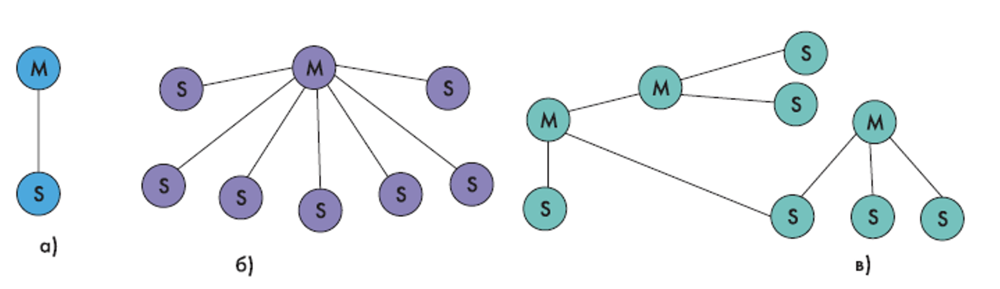
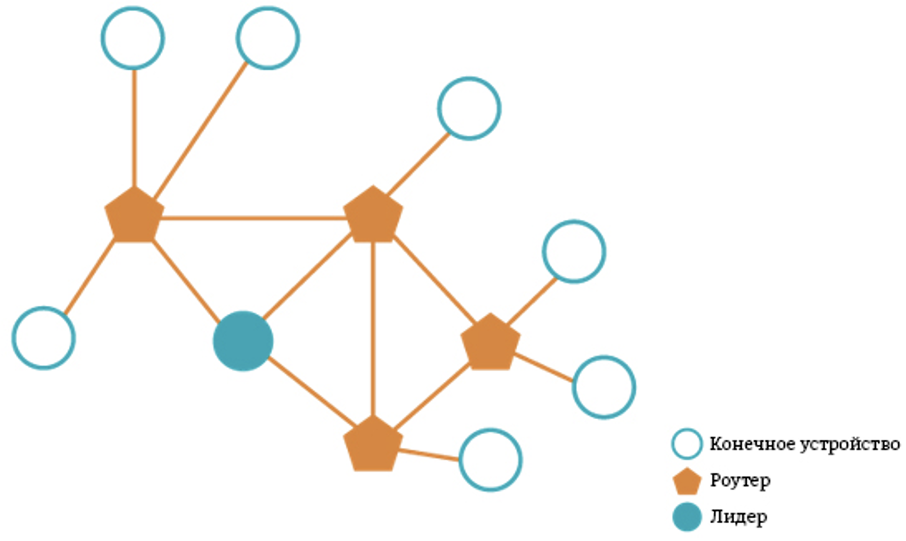

Беспроводные технологии передачи данных

|
|
Беспроводные технологии передачи данных |
|
|
|
WPANWPAN — сети, стандарт которых разработан рабочей группой IEEE 802.15. WPAN применяются для связи различных устройств, включая компьютерную, бытовую и оргтехнику, средства связи и т. д. Физический и канальный уровни регламентируются стандартом IEEE 802.15.4. Радиус действия WPAN составляет от нескольких десятков сантиметров до нескольких метров. WPAN используется как для объединения отдельных устройств между собой, так и для связи их с сетями более высокого уровня, например, глобальной сетью интернет. Согласно IEEE, WPAN подразделяется на 3 класса:
BluetoothBluetooth — технология беспроводной передачи данных. Bluetooth обеспечивает обмен информацией между такими устройствами как персональные компьютеры, телефоны, принтеры и т.д., на надёжной, недорогой, повсеместно доступной радиочастоте для ближней связи. Bluetooth позволяет этим устройствам общаться, на расстоянии от 1 до 100 метров друг от друга. Bluetooth - это маленький чип, представляющий собой высокочастотный (2.4 - 2.48 ГГц) приёмопередатчик. Энергопотребление не должно превышать 10 мВт. Изначально технология предполагала возможность связи на расстоянии не более 10 метров. Сегодня некоторые фирмы предлагают микросхемы Bluetooth, способные поддерживать связь на расстоянии до 100 метров. Как радиотехнология, Bluetooth способен "обходить" препятствия, поэтому соединяемые устройства могут находиться вне зоны прямой видимости. Соединение происходит автоматически, как только Bluetooth-устройства оказываются в пределах досягаемости, работает по принципу точка - точка и точка - много точек. Технология Bluetooth предполагает два вида связи: синхронную - SCO (Synchronous Connection Oriented) и асинхронную - ACL (Аsynchronous Connectionless). Первый вид, SCO, рассчитан на установление симметричного соединения "точка - точка" и служит преимущественно для передачи речевых сообщений. Скорость передачи информации SCO равна 64 Кит/с. Второй, ACL, предназначен для пакетной передачи данных. Он поддерживает симметричные и асимметричные соединения типа "точка - много точек". Скорость передачи пакетной информации при ACL cоставляет порядка 721 Кбит/с. Пакеты данных имеют фиксированный формат. В начале блока находится 72-бит код доступа. Он может применяться, в частности, для синхронизации устройств. За ним следует 54-бит заголовок пакета, содержащий контрольную сумму пакета и информацию о его параметрах (например, о повторной передаче блока данных). Замыкает пакет область, непосредственно содержащая пересылаемую информацию. Размер этой области варьируется от 0 до 2745 бит. Основополагающим принципом построения систем Bluetooth является использование метода расширения спектра при скачкообразном изменении частоты (FHSS - Frequency Hop Spread Spectrum). Весь выделенный для Bluetooth-радиосвязи частотный диапазон 2,402–2,480 ГГц разбит на N частотных каналов. Полоса каждого канала 1 МГц, разнос каналов – 140–175 кГц. ZigBeeВ 2002 году был образован альянс ZigBee — это консорциум поставщиков полупроводниковых компонентов, производителей готовых решений, который осуществляет разработку глобальной спецификации программного стека протоколов ZigBee. Спецификация ZigBee предназначена для приложений, требующих гарантированной безопасной передачи данных при относительно небольших скоростях и возможности длительной работы сетевых устройств от автономных источников питания. Когда устройство планирует начать передачу, оно отправляет в сеть jam-сигнал и определенное время ждет подобных сигналов от других источников излучения. В случае если jam-сигналов других передающих устройств нет, устройство осуществляет передачу. Если замечен «чужой» сигнал, то передатчик «засыпает» на случайный отрезок времени, а потом опять пробует начать передачу. В данном случае одновременно передача может быть осуществлена только от одного устройства, что увеличивает производительность сети. Тем не менее, необходимость ожидания свободного канала влияет на скорость обмена данными. Протокол передачи подразумевает «засыпание» передатчика при отсутствии данных для пересылки, за счет чего достигается низкое энергопотребление устройств, взаимодействующих по стандарту IEEE 802.15.4. В связи с этим время автономной работы оконечных устройств может составлять несколько лет. Важно отметить, что подобные «засыпания» не влияют на сохранении подключения. Создавая стандарт, основной упор был направлен на скорость процессов конфигурирования и переконфигурирования сети; и разработчики в этом весьма преуспели. Например, переход приемника в активное состояние составляет около 15 мс; а добавление нового устройства в сеть — около 30 мс. Сеть ZigBee состоит из трех типов логических устройств: координатор ZigBee, маршрутизатор ZigBee и оконечное устройство ZigBee. Z-WaveZ-Wave – это ячеистая структура распределения данных, где каждый узел может являться ретранслятором для передачи сигналов, тем самым обеспечивая огибание препятствий и зон с помехами. При запуске сети устанавливаются прозрачные маршруты прохождения сигналов, и каждый исполняющий компонент запоминает оптимальный маршрут для доставки данных к необходимому получателю. На пути прохождения сигнала протокол Z-Wave допускает наличие 4 ретрансляторов. Ретрансляторами не могут быть устройства, которые питаются от батарейки, так как в таких условиях эксплуатации элемент питания будет разряжаться намного быстрее. Это также определяет и сам протокол. Максимальное расстояние между двумя беспроводными точками на открытой местности ограничивается дистанцией в 40 метров. Стены, мебель и другие препятствия уменьшают это расстояние, в силу того что сигнал теряет свою мощность проходя через физические препятствия. Сеть Z-Wave определяется уникальным параметром Home ID, которая генерируется при создании сети генератором случайных чисел с шумом от радиоприёмника в качестве источника случайных числе или назначается Sigma Designs для старых контроллеров. На одной территории может сосуществовать несколько сетей Z-Wave с разными Home ID. При этом они не будут друг друга видеть и друг с другом взаимодействовать. Благодаря обязательному требованию скважности эти сети не будут друг другу мешать. У каждого узла в сети есть свой уникальный Node ID, который присваивается первичным контроллером при включении устройства в сеть. Также при включении в сеть включаемое устройство запоминает Home ID первичного контроллера для дальнейшего общения. Сеть может содержать до 232 устройств. Включение происходит переводом контроллера в специальный режим Включения, а включаемого устройства в режим Обучения. При этом контроллер и включаемое устройство должны находиться в прямой видимости. Многие современные (версии протокола 4.5x или 6.x) постоянно питающиеся устройства первые 3–5 минут после включения в сеть электропитания самостоятельно переходят в специальный режим обучения, если они ещё не включены в сеть. При этом условие нахождения в прямой видимости уже не требуется. Это позволяет достаточно легко включать в сеть новые устройства, не бегая по дому. В Z-Wave есть полноценное шифрование AES с длиной ключа 128 бит. Естественно, шифрование накладывает свои ограничения: оно работает медленнее, т. к. уже недостаточно просто отправить пакет - надо до этого обменяться одноразовыми ключами (nonce). ThreadThread – это открытый протокол локальной беспроводной сети с ячеистой топологией, созданный специально для коммуникации IoT-устройств. Протокол Thread был разработан с целью улучшить способ подключения и контроля за IoT-устройствами в домашних условиях и предназначен для безопасного и надежного подключения данных устройств в пределах умного дома. Thread был создан на основе технологии IEEE 802.15.4 и анонсирован организацией Thread Group в ноябре 2014 года. В сети Thread используются всего 2 типа устройств: Маршрутизатор (Router Eligible) — это узел, который необходим для поддержания ячеистой топологии сети (поиск маршрута, ретрансляция сообщений и т. д.). Вся информация, хранящаяся в лидерском узле, дублируется в других маршрутизаторах. При возникновении неполадок другие маршрутизаторы в сети в автономном режиме могут стать Лидерами, следуя правилу «одна сеть – один Лидер». Устройства, которые при подключении к сети указали свой тип как Конечный узел (End Device), не поддерживают возможность осуществления каких-либо операций, связанных с маршрутизацией. Напротив, вся связь с внешним миром осуществляется через «родительские» узлы – маршрутизаторы. RFIDRFID - Radio Frequency IDentification — способ автоматической идентификации объектов, в котором посредством радиосигналов считываются или записываются данные, хранящиеся в так называемых транспондерах, или RFID-метках. Любая RFID-система состоит из считывающего устройства и транспондера. Большинство RFID-меток состоит из двух частей. Первая — интегральная схема (ИС) для хранения и обработки информации, модулирования и демодулирования радиочастотного (RF) сигнала и некоторых других функций. Вторая — антенна для приёма и передачи сигнала. Разделение по источнику питания:
По типу используемой памяти различают следующие RFID-метки:
NFCNear field communication — технология беспроводной коротко дистанционной передачи данных, которая даёт возможность обмена данными между устройствами, находящимися на расстоянии около 10 сантиметров. Была анонсирована в 2004 г. NFC работает на частоте 13,56 МГц. NFC всегда включает инициатор и цель; инициатор активно генерирует радиочастотное поле, которое может влиять на пассивную цель. Данная технология — простое расширение стандарта бесконтактных карт (ISO 14443), которое объединяет интерфейс смарт-карты и считывателя в единое устройство. Устройство NFC может поддерживать связь и с существующими смарт-картами, и со считывателями стандарта ISO 14443, и с другими устройствами NFC и, таким образом, — совместимо с существующей инфраструктурой бесконтактных карт, уже использующейся в общественном транспорте и платёжных системах. Благодаря компактным размерам и низкому потреблению энергии NFC можно использовать в небольших устройствах. У NFC устройств есть два режима взаимодействия. Если инициатор излучает радиочастотные волны, а цель за счёт инициатора получает питание, то такой режим взаимодействия называют пассивным. При активном режиме у инициатора и цели свои собственные источники питания, и они независимы друг от друга. NFC устройства также имеют три способа работы. Они могут работать в режиме чтения информации с цели или записи на неё. Они могут эмулировать карты, ведя себя как RFID-метки, когда они в поле другого NFC или RFID устройства. Или они могут работать в режиме peer-to-peer (P2P), в котором они обмениваются данными сразу в обоих направлениях. |
|
разработка Леонида Спиридонова |
 Главная
Главная WPAN
WPAN